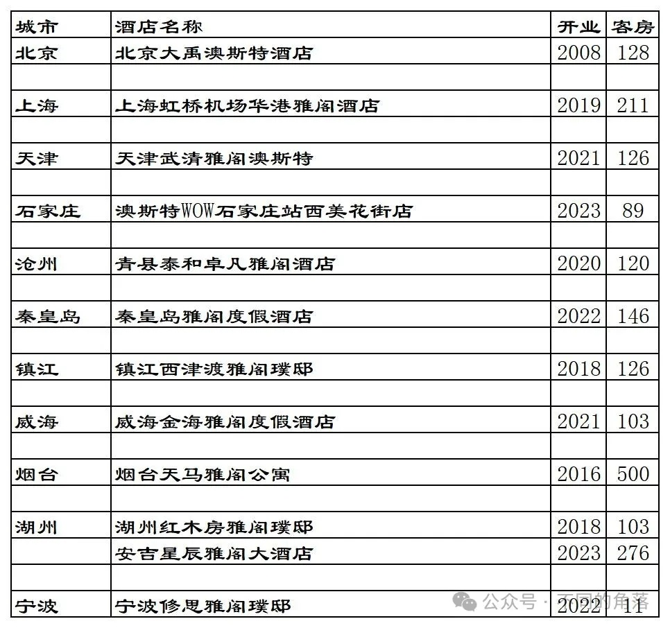
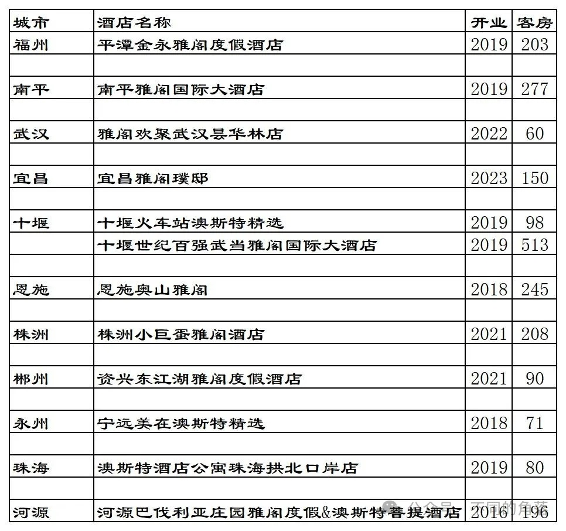
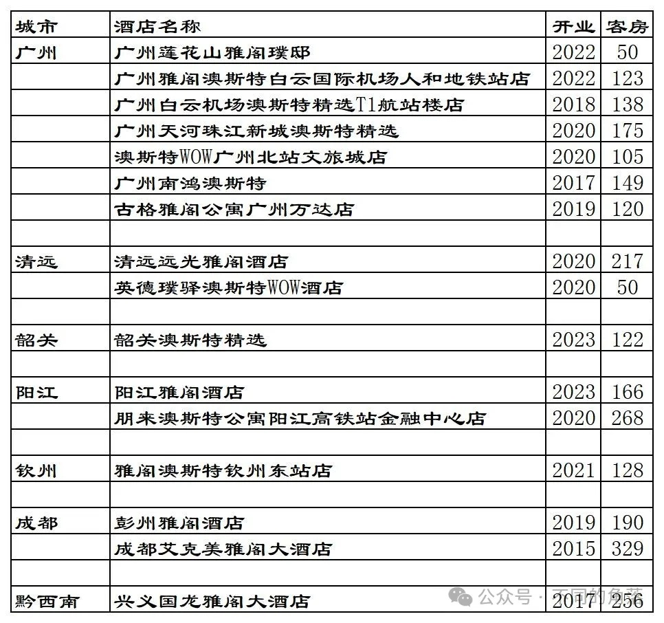
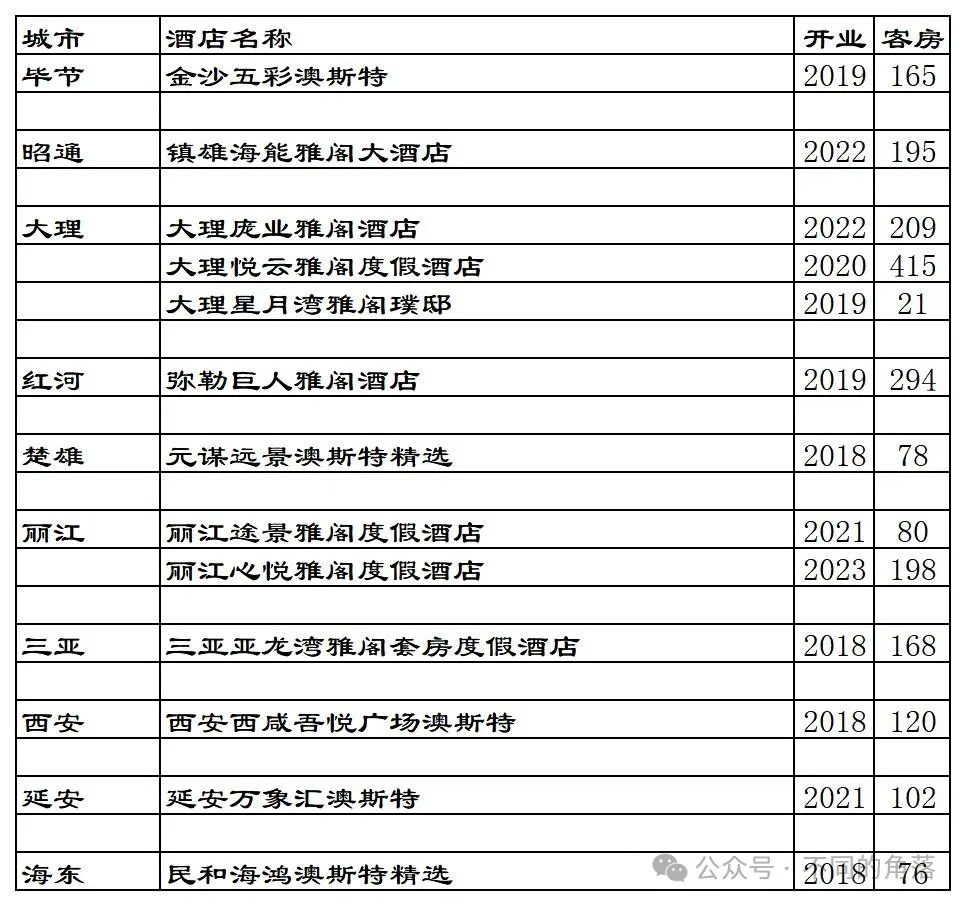

雅阁旗下国内已开业酒店统计，统计截至2023年12月31日。
客房数据主要来自于雅阁官方平台与OTA，部分酒店客房数量打过酒店电话核实，记录的是酒店员工告知的客房数量。
个人精力有限，部分酒店开业/退出/下线时间以及客房数量难免有错误，欢迎各位告知指正，谢谢！
截至2023年12月31日雅阁官方平台可以查询到的国内已开业酒店共计70家，其中29家酒店可以预订，其余41家酒店所有日期都无法预订。
70家酒店中，有10家公寓是广州维福顿旗下公寓，与雅阁合作上线雅阁官方预订平台，但其中自有3家可以预订。去除这10家维福顿公寓后，雅阁官方平台雅阁旗下品牌国内酒店60家。
雅阁官方平台可以查询到的国内60家酒店中，西安2家澳斯特（1家可以预订）实际上是一家酒店，另外还有6家不能预订的酒店早已退出翻牌为其它酒店。在OTA平台还可以查询到1家雅阁品牌其它酒店，不过酒店已经不与雅阁合作，后续也会翻牌为其它品牌。
雅阁国内目前一共53家酒店8837间客房，其中26家酒店可以在雅阁官方平台预订。
雅阁官方平台预订价格基本都比OTA价格贵，有的贵了近20%。
格林酒店官方平台上目前还有10多家雅阁酒店，都不能预订。自格林2019年入股雅阁以来，仅有大约一年多时间可以在格林官方平台预订雅阁旗下20多家酒店。
目前雅阁在北京、上海、天津、河北、江苏、山东、浙江、福建、湖北、湖南、广东、广西、江西、四川、贵州、云南、海南、陕西、青海有酒店。
开业：新酒店开业或是其它酒店翻牌开业时间；客房：客房数量。



